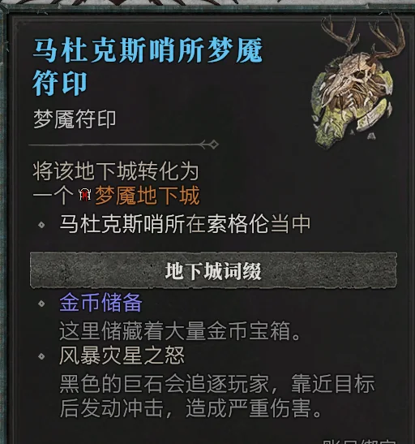
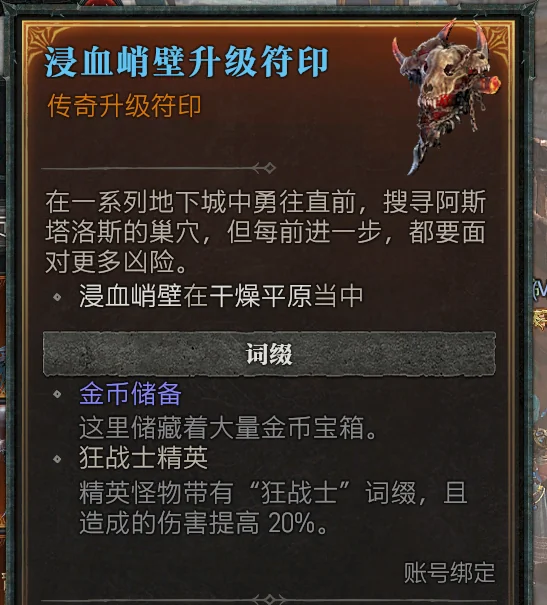
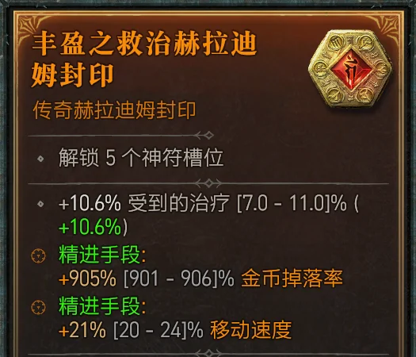
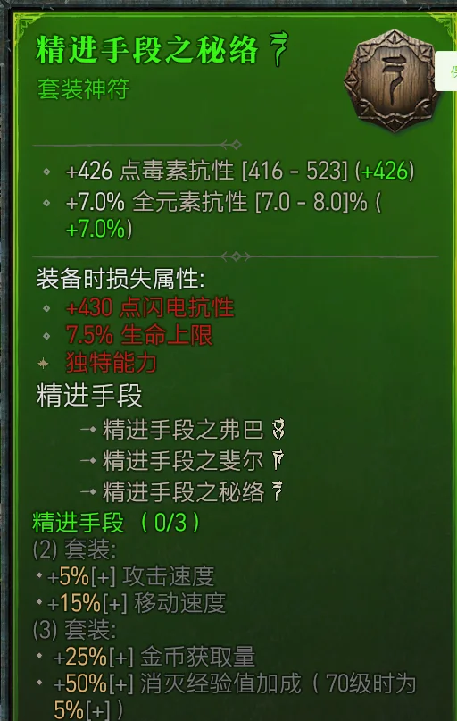

S13 · 实用技巧
S13赛季 小技巧攻略
经济速刷 · 宝石合成 · 黄门红门 · 做装心得 · 速升级技巧 · 收录当前版本实用干货
🔗 攻略整理: 看雲起雲落 · 基于S13赛季当前版本
💰 经济与材料
🤑 金币如何快速获取？
| 优先级 | 方式 | 说明 |
|---|---|---|
| ★★★ | 梦魇地下城钥匙（金币词缀）+ 精进套装 + 封印   |
选择带金币词缀的梦魇地下城钥匙，搭配精进套装（折磨I以下获取，可三合一合成）与封印。每局10亿-50亿金币，视地图而定。封印通过三合一合成或运气直接掉落。 |
| ★★☆ | 卖神符和封印给商人 | 开荒前期可以如此操作，每个封印最贵1300W+。但后期不建议，因为封印和神符还能分解获得树脂材料，是后期制作终极神符的核心材料。 |
| ★☆☆ | 战争计划奖励 / 地狱狂潮 | 收益低于前两者，若前两者无法满足可考虑。 |
🏰 遗忘之魂去哪里刷？
| 优先级 | 方式 | 说明 |
|---|---|---|
| ★★★ | 合成 | 找炼金师，100个萦雾水晶可合成1个遗忘之魂。萦雾水晶还能通过生皮和铁矿合成，材料充裕时优先选择。 |
| ★★★ | 分解暗金装备 | 打巢穴Boss/幽暗之城/红门获得的多余暗金直接分解，最高效来源。900普通暗金=14个；900先祖=1-2个。 |
| ★★★ | 战争计划材料节点 | 选材料路线时有遗忘之魂直接奖励。 |
| ★★☆ | 梦魇地下城「战争储备」词条 | 完成带此词条的地下城，结尾箱子必出材料包含遗忘之魂。 |
| ★★☆ | 军团事件 | 参与后有材料奖励，但需等刷新，建议路过顺手。 |
| ★☆☆ | 地狱狂潮精英怪 | 效率偏低，不推荐专门去刷。 |


⚠️ 注意：不要无脑分解所有装备。900强度黄装若有1-2条目标或太古目标词缀，可以送进魔盒加工，说不定能做成过渡装，价值远超分解。
🧪 如何获得注能赫拉迪姆树脂？
树脂是魔盒高级操作的核心消耗品，尤其获得3技能的神符需要通过大量重置神符来获取。
| 优先级 | 来源 | 说明 |
|---|---|---|
| ★★★ | 分解封印和神符 | 每个封印可获取50个树脂材料，是后期获得树脂的最佳来源，不建议全卖钱。 |
| ★★☆ | 战争计划材料节点 | 选树脂相关路线有直接产出。 |
💎 宝石系统
⭐ 宝石获取与S13终极宝石合成
| 优先级 | 方式 | 说明 |
|---|---|---|
| ★★★ | 先祖之路 | 每次Boss必掉3个皇家宝石，有时还有完美宝石。通过日志-重置副本可反复刷取，建议移速快或传送快的BD来速刷。 |
| ★★☆ | 梦魇地下城（宝藏/裂界词条） | 宝石掉落密集，但此类钥匙较难获取。 |
| ★☆☆ | 幽暗之城 | 宝石+其他材料兼得，适合中后期。 |
S13宝石合成路线
- 首饰NPC合成最高级的巨型宝石
- 魔盒将5个巨型宝石 = 1个赫拉迪姆宝石
- 魔盒将5个赫拉迪姆宝石 = 1个无瑕的赫拉迪姆宝石
✨ 版本终极答案：无瑕的赫拉迪姆宝石属性将大幅提升，相比普通宝石提升约1.5-2倍！
🌀 黄门与红门
🟡 无限黄门（金门）
定义：黄门即战争计划-梦魇地下城的右侧天赋中，地精（哥布林/捣蛋鬼）触发的金色传送门。击杀或追赶地精时有概率开启，进入后是高密度宝藏区，古币、金币、材料、太古（概率）、神话（概率）爆炸式掉落。
无限刷方法
- 自己开启：战争计划-梦魇地下城右侧天赋最终节点，日常打地精触发。
- 找已有黄门的玩家（如某些主播，一般免费）传递火种。
- 进入已有玩家地图（需要与他不同难度，如他难度11，你设难度12），然后离开队伍。
- 找一个木桩队友让他也获得火种，不断传送他、离开队伍即可无限刷。
- 或两人不同难度，每打一次离开队伍重置即可。
⚠️ 3.0.2更新状态：目前尚可用，但5.13更新后需重新验证。
🔴 红门是什么？
定义：类似黄门，通过战争计划-巢穴首领中间天赋点到底。一层红门之前已修复无法无限速刷，但二层红门可以，宝石等掉落丰富。
无限刷方法
- 找已有红门玩家传递火种。
- 其他机制同黄门，无限速刷即可。
⚠️ 3.0.2更新状态：修复了夙敌巢穴（红门）在某些情况下可被无限刷取的问题。 — 已确认5.13补丁修复。
🔥 阿斯塔洛斯无限速刷
🎯 如何无限刷取阿斯塔洛斯？
需求：阿斯塔洛斯是传奇地下城最后一层Boss，掉落多个职业的毕业装备，如法师的冬镜项链。
目前存在Bug可无限刷，不用每次打3层地下城再击杀，省去大量时间。
操作方法
- 战争计划-巢穴首领右侧天赋，点出阿斯塔洛斯之犬。
- 随便找一个传奇梦魇地下城钥匙，打到最后一层。
- 进入阿斯塔洛斯房间后，迅速走出来（注意别走出太远）。
- 阿斯塔洛斯之犬会跟随你刷出，击杀获取装备掉落。
- 回城，再回来，即可无限速刷。
- 如进房后未能及时走出来，击杀阿斯塔洛斯之犬后自杀即可（注意别把Boss杀了）。
ℹ️ 目前状态：5.13补丁未看到相关修复描述，暂未修复。
🔮 做装系统
📖 战争计划如何合理配置？
参考攻略站中的 战争计划攻略。
✨ 如何合理嬗变（圣化）？
详细嬗变信息及各配方用法参考 赫拉迪姆魔盒攻略。
小技巧：锁定太古词缀
适用于想重置某条词缀，但它还有同类型的另一条太古词缀时：
- 在秘术师处对这条太古词缀进行一次附魔，选择无变化。
- 它就会被锁定，无法被魔盒的做装系统修改。
- 缺点：装备后续还有垃圾词缀也无法再次附魔了。
已知的坑
⚠️ 全抗不算做抗性类型 — 注意别用抗性类型的棱柱来获得全抗！
⚠️ 全技能不算做技能类型 — 注意别用技能类型的棱柱来获得全技能！
⚠️ 全技能不算做技能类型 — 注意别用技能类型的棱柱来获得全技能！
🧱 如何获得白色装备（普通品质）？
用途：白装是做特定魔盒配方的底材，可将白装升级为暗金。通过这种方式可获取术士的各种武器——同类型暗金只有1-2个，轻松获得想要的初期暗金。
获取方式
- 魔盒做装：赌博出蓝色或黄色装备，去魔盒移除所有词缀，变为白色。
- 城镇商人（铁匠/商人）直接购买——最稳定，部分地图商人固定出售白装。
- 野外怪物掉落：低难度区域更常见，高难度出金装/暗金概率高白装反而少。
- 降低游戏难度：普通/冒险难度白装掉落更多。
🎰 如何获得神话暗金贡品（紫色）？
✨ 小秘密：在魔盒处，通过5个传奇贡品可合并为1个神话暗金掉落的贡品！
🎰 赌博技巧
⚠ 秘语古币赌博 — 你肯定找错人了！
目前新城忒弥斯的赌博NPC存在Bug，无法赌博出暗金和神话暗金。
⚠️ 建议所有赌博都回到老城，比如赛瑞加。不知道这个技巧，你可能已经和无数神话暗金擦肩而过了！
⚙ 其他技巧
👶 小号如何快速70级？
| 优先级 | 方式 | 说明 |
|---|---|---|
| ★★★ | 秘语之树宝箱 / 组队任务小队奖励宝箱 | 3秒钟70级，绝对不是梦。建议攒够10+宝箱给小号去开启。 |
| ★★☆ | 队友带魔渊 | 队友通过魔渊带小号升级，略慢，估计至少半小时以上。 |
🔄 如何快速升级战争计划活动经验？
- 需要一个队友。
- 两人需要有同样的第一个战争计划活动（如都是梦魇地下城）。
- 组队，任意一人开启该活动，完成活动。
- 日志 -> 放弃当前的战争计划。
- 重置地下城。
- 重新开启战争任务（同一个活动）。
- 如此往复，可无限速刷某一个活动的经验。
📦 暗金出处查询
🔍 如何查看暗金装备的出处？
游戏中按住Alt键（或右摇杆）查看装备掉落来源提示，但有时信息不够直观。可以在衣柜中搜索未获得的暗金，查看其可能的掉落来源。
也可以参考我们整理的 S13 Boss掉落表，涵盖各Boss的专属暗金和神话暗金掉落信息，方便按目标Boss规划刷取路线。
✨ 建议：先确认目标暗金的掉落Boss，然后集中刷对应的巢穴或终局活动，效率远高于盲刷。